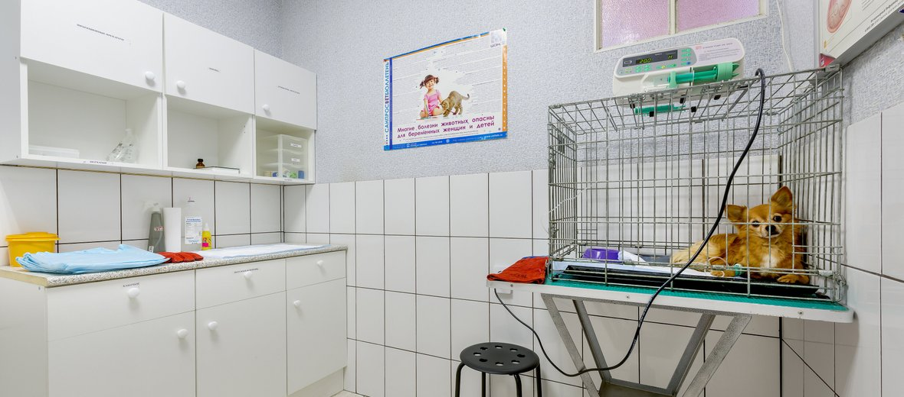

Наша ветеринарная клиника всегда подчиняется правилу: сделать все возможное для здоровья питомца и при этом сохранить доступную стоимость услуг. Мы прилагаем максимум усилий, чтобы лечение было успешным, для начала изучив состояние здоровья вашего любимца. Мы обеспечиваем квалифицированную помощь домашним животным, работая без выходных и праздников уже на протяжении 10 лет.
Свою деятельность наша клиника начала в 2006 году, создав скорую ветеринарную помощь. Тогда в ней работало всего несколько врачей, которые днем и ночью спасали домашних любимцев. Труд был непростым, ведь животные, в отличие от людей не скажут, что у них болит. Поэтому ветеринарный врач, прежде всего, должен обладать талантом, понимания своих пациентов. Именно такие люди создавали ветклинику тогда и сейчас работают над ее развитием. <>
Они всегда стремились внедрить в свою работу самые современные методы лечения питомцев. Поэтому в течение первых четырех лет максимально расширили перечень специализированных услуг, в которых нуждались животные. Увеличилось и число квалифицированных сотрудников. Уже к 2009 году на базе скорой помощи открыли современную ветеринарную клинику.
Сейчас тут работают ветеринарные врачи самого высокого уровня квалификации. Они профессионально проведут диагностические, терапевтические и хирургические манипуляции. Чтобы более точно поставить пациенту диагноз - в клинике используют самое современное оборудование и новейшие методы. В учреждении по последнему слову науки оснастили и лабораторию. Известна наша клиника и хирургами высокого класса. Они выполняют оперативные вмешательства различного уровня сложности, при этом применяя уникальные современные технологии.
